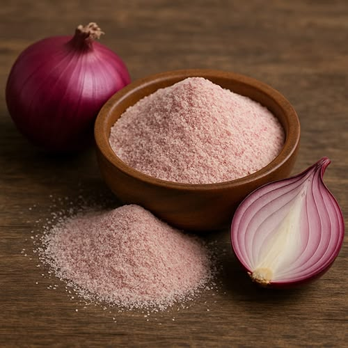

Product 01
Onion Powder
Made from carefully selected fresh onions and processed through controlled dehydration to create a convenient and flavourful powdered ingredient.
Fresh onion→Dehydration→Fine powder→Packaging
Food ProcessingSeasonings & Spice BlendsSnack FoodsSauces & CondimentsReady-to-Eat Foods
Enquire Now